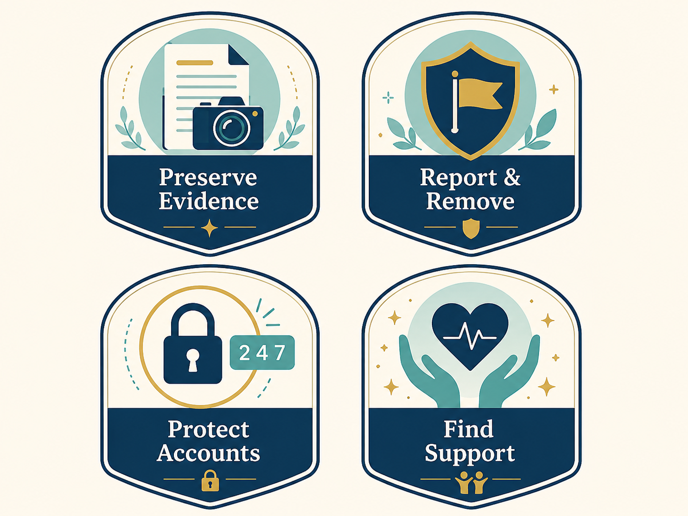

This page focuses on practical steps, 21st-century skills, and safety strategies that can help potential targets and current victim-survivors respond to nonconsensual distribution of intimate images. It does not replace legal advice, counseling, or emergency help.
Support systems matter
Victim-survivors often need both practical help and emotional support.
Trusted people, reporting tools, legal information, and crisis resources can all act as forms of guardianship.
Getting help early can reduce isolation and make evidence preservation easier.

Support resources can include emotional care, cyber-safety steps, reporting tools, legal guidance, and trusted people.
21st-Century Skills
Vigilance: recognize pressure, threats, controlling behavior, and requests to “prove” trust by sending intimate images.
Responsibility: understand that saving, forwarding, laughing at, or reposting someone’s private image contributes to harm.
Critical thinking: question promises like “I will never show anyone” when someone is pressuring or manipulating you.
Decision making: consider how images can be saved, screenshotted, forwarded, posted, or used as blackmail.
Problem solving: slow down, preserve evidence, report the account, ask for help, and avoid handling threats alone.
Routine Activity Theory Safety
Routine Activity Theory explains victimization as the meeting of a motivated offender, a suitable target, and lack of capable guardianship.
Reduce suitability as a target by limiting what private images, passwords, locations, and personal details are shared online.
Increase guardianship by using trusted adults, friends, school officials, platform reporting tools, privacy settings, and law enforcement when needed.
Use two-factor authentication, stronger passwords, privacy controls, and device/account checks to reduce offender access.
If You Are Being Threatened
Save screenshots, URLs, usernames, dates, messages, and threats before anything is deleted.
Do not send more images or money in response to threats.
Report the content or account to the platform using nonconsensual intimate image, harassment, copyright, or privacy tools.
Tell a trusted person, counselor, school official, victim advocate, or local police if you are in danger.
Helpful Websites and Strategies
These resources can help potential targets and current victim-survivors learn about legal options, reporting, image removal, emotional support, and cyber-safety steps.
Cyber Civil Rights Initiative — provides information and support resources for nonconsensual pornography and related abuse.
Image Removal and Reporting Tools
StopNCII.org — helps adults take action against the online spread of nonconsensual intimate images.
Take It Down — helps young people remove or limit the spread of nude, partially nude, or sexually explicit images online.
Use platform reporting tools for nonconsensual intimate images, harassment, privacy violations, impersonation, or copyright/DMCA requests when available.
Support and Cyber Strategies
RAINN — offers sexual assault support resources and hotline information.
Change passwords, turn on two-factor authentication, review cloud storage, check connected devices, and save screenshots, usernames, URLs, and dates.
References
Cox, J. (2018, March 8). Revenge porn moves to Slack. Vice Motherboard. https://www.vice.com/en/article/revenge-porn-moves-to-slack/
Shapiro, L. R. (2023). Combating cyberpredators through education. In Cyberpredators and their prey (pp. 335–360). CRC Press.
Without My Consent. (n.d.). 50 State Project. https://withoutmyconsent.org/50state/
Wolak, J., & Finkelhor, D. (2016). Sextortion: Findings from a survey of 1,631 victims. Crimes against Children Research Center, University of New Hampshire.
Disclaimer
This website was designed by V.A. as a project for my course. Thank you for visiting my site to learn about nonconsensual distribution of intimate images. The information within this site was accurate at the time of its creation in December 2025. However, please note that this site will not be monitored nor will it be updated. If you have questions about any of the material within it, please see the sites listed in "Help for Victim-Survivors" and if you believe you are a victim of nonconsensual distribution of intimate images, please report it to your local police.